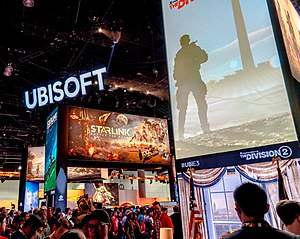

유비소프트 엔터테인먼트 S.A.(영어: Ubisoft Entertainment S.A.)는 프랑스 몽트뢰유에 본사를 둔 컴퓨터 비디오 게임 발행사이자 개발사이다. 23개 국가에 지사를 두었으며 그중 11개 국가에는 15개의 개발 스튜디오가 있어서 전 세계 18,000명의 직원 중 16,000여명이 게임 제작에 참여하고 있다.
대표작은 《레이맨》 , 《페르시아의 왕자》, 《파 크라이》,《어쌔신 크리드》, 톰 클랜시 게임들(《레인보우 식스》, 《스프린터 셀》, 《고스트 리콘》,《와치독스》, 《더 디비전》) 가 있고, 50여개국에 그들의 게임이 배급되고 있다.

1984년 길모트 5형제는 부모님의 통신 판매 사업을 물려받았다. 그들은 프랑스에서 성장하고 있는 컴퓨터 시장을 노리고 컴퓨터 하드웨어와 그 악세사리를 배급하는 회사를 세웠지만, 컴퓨터 하드웨어 플랫폼이 표준화되어가며 소프트웨어의 중요성을 알아가기 시작했다.
그들은 1986년 컴퓨터 소프트웨어를 배급하는 회사인 유비소프트를 세웠고, 외국의 소프트웨어를 프랑스 소매상들에게 전달하는 배급 사업을 시작했다.
1988년 유비소프트는 일렉트로닉 아츠, 시에라 엔터테인먼트, 마이크로프로즈 같은 발행사들과의 계약을 따내 당시 업계의 선두주자들의 게임들을 프랑스에 배급하게 되었다. 이를 통해 회사는 급격히 성장하기 시작했고, 1989년 영국에 첫 배급 지사를 세웠다. 이어 미국과 독일에도 사무실을 열었다.
1992년에는 프랑스 몽트뢰유와 루마니아 부쿠레슈티에 첫 내부 제작 스튜디오를 열었고, 1993년 소니와 세가로부터 그들의 콘솔 게임기로 게임을 개발할 수 있는 라이선스를 얻었다. 1995년 미셸 앙셀이 디자인한 《레이맨》은 그들이 처음으로 제작한 게임이었고, 큰 성공을 거두어 유비소프트를 가족용 소프트웨어의 전문가로 만들어 주었다.
이후 레이맨은 유비소프트의 공식 마스코트가 되었다.
1996년 회사는 주식을 파리 증권 거래소의 2부 시장에 공개했고, 그와 함께 워너브라더스나 디즈니 같은 거대 회사와 제휴를 맺게 되었다. 이어 회사는 1997년부터 1999년 사이에 캐나다 몬트리올, 스페인 바르셀로나, 중국 상하이, 이탈리아 밀라노, 모로코 카사블랑카, 프랑스 몽펠리에와 아느시에 새로운 제작 스튜디오를 설립했다.
2000년에는 유비소프트의 주식이 파리 증권 거래소의 1부 시장으로 이동했고, 같은 해 톰 클랜시 게임 《레인보우 식스》를 개발한 레드 스톰 엔터테인먼트를 인수했다. 2001년에는 세틀러 시리즈로 유명한 블루바이트 소프트웨어를 포함해 여러 제작 스튜디오를 인수했다.
그중에 러닝 컴퍼니의 게임 부서를 인수하며 페르시아의 왕자, 체스마스터, 미스트를 포함한 80여개의 게임 발행에 대한 독점 권한을 획득했다. 그리고 이 해 자사가 발행한 게임들을 총괄하는 게임 포탈인 ubi.com을 열었고, 매달 500만명의 방문자를 받고 있다.
2002년에는 핀란드, 캐나다, 스위스와 함께 대한민국 서울에 지사를 열었고, 대한민국에서는 위자드소프트, 블루 인터랙티브, 인트라링스 등 여러 발행사와 계약하여 자사의 게임을 대한민국에 출시했다.
2003년에는 지금의 로고를 공개했는데, 이 시기에 유비소프트는 톰 클랜시 브랜드의 《스프린터 셀》과 《레인보우 식스 3》, 그리고 《페르시아의 왕자: 시간의 모래》, 《파 크라이》, 《비욘드 굿 앤 이블》, 《XIII》 등을 발행하며 판매 순위를 잠식하기 시작했다.
2004년 프랑스 몽펠리에의 트윅 스튜디오를 인수했다. 2005년에는 대학 수준의 교육을 표방하며 캐나다 몬트리올에 유비소프트 캠퍼스를 열어 게임 제작자를 양성하고 있다.
2006-2007 회계연도에는 6억 8천만 유로의 판매고를 올렸다. 유비소프트는 그 동안 1000개가 넘는 타이틀을 발매했으며, 유럽에서 두 번째, 북미에서 다섯 번째, 세계(일본 제외)에서 네 번째 가는 독립 발행사가 되었다.
유비소프트에서 개발한 디지털 배급, 디지털 권리 관리(영어: DRM), 소셜 네트워크 서비스 제공 플랫폼이다. 사용자들이 PC나 모바일 플랫폼을 이용해 게임을 구매할 수 있도록 하며, 유플레이(영어: UPlay Client)를 통해 게임을 다운로드 할 수 있게 한다.